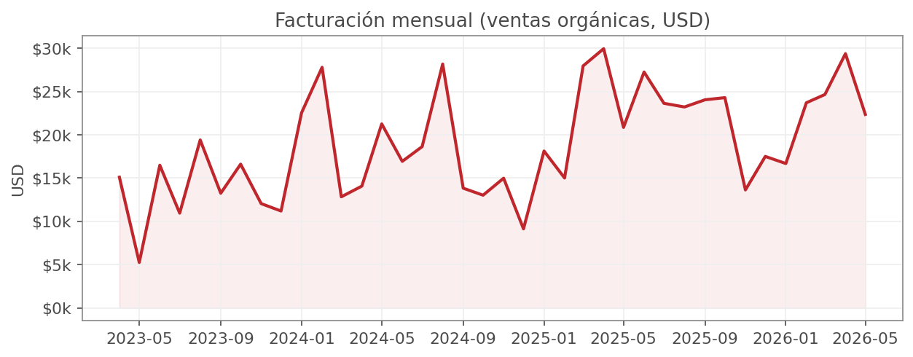
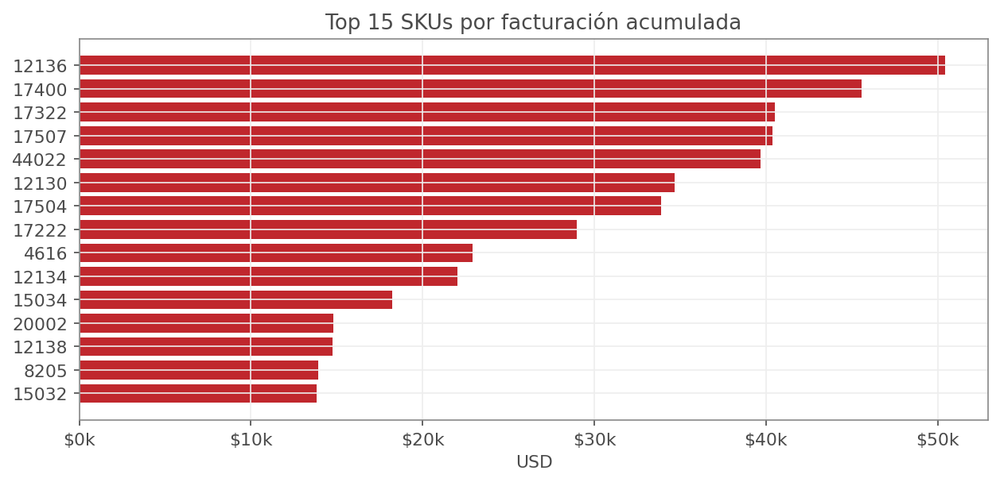
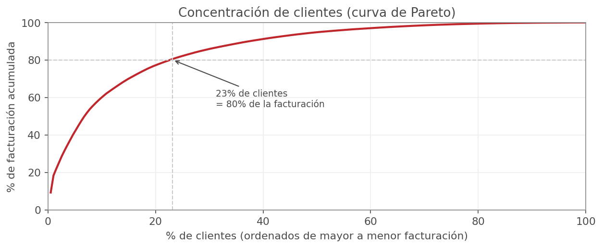
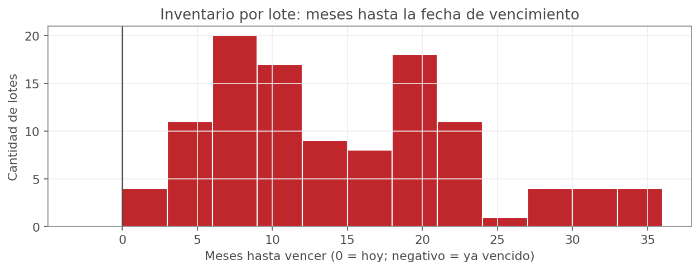
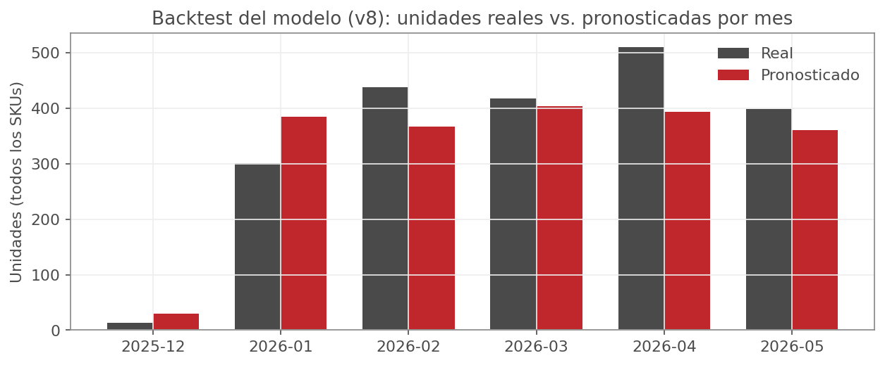

| Trabajo Fin de Máster | Máster Data Science, Big Data & Business Analytics 2025-2026 (Semi-presencial) |
| Universidad | Universidad Complutense de Madrid (UCM — NTIC) |
| Autor | Joseph Alejandro Mora Murillo |
| Tutores | Carlos Ortega, Santiago Mota |
| Repositorio | https://github.com/0107joseph-ui/sponser-analitica-tfm (privado — tutores con acceso) |
Anexo (no cuenta para el límite de extensión): código fuente completo, y documentación técnica ampliada en docs/arquitectura.md, docs/pipeline_datos.md y docs/modelado.md del repositorio.
Sponser Costa Rica es un distribuidor de nutrición deportiva con un catálogo de cerca de 170 SKUs y una cartera de 194 clientes activos. La operación dependía de reportes planos exportados a mano, sin un pronóstico de demanda que anticipara estacionalidad o eventos, y sin visibilidad sistemática del riesgo de que el inventario existente venza antes de poder venderse.
Este trabajo desarrolla, sobre datos reales de la empresa (ventas 2023-2026, inventario por lote con fecha de vencimiento, patrocinios), una solución de extremo a extremo: un pipeline de datos que limpia y agrega la información comercial, un modelo de pronóstico de demanda diaria por producto (LightGBM, arquitectura de dos etapas), una simulación de reabastecimiento consciente de vencimientos (FIFO), y una aplicación web donde el equipo comercial carga los datos actualizados, corre el modelo y analiza los resultados — cumpliendo el criterio de productivización de un modelo predictivo: recibe datos nuevos y devuelve una recomendación de compra accionable.
La operación comercial de Sponser identificó tres problemas concretos que motivan este trabajo:
El objetivo del proyecto es doble: (a) demostrar un desarrollo analítico completo — descriptivo, predictivo y de decisión — sobre un problema de negocio real, y (b) entregar una herramienta que el equipo comercial de Sponser use de forma continua, no un análisis de una sola vez.
Los datos utilizados son reales y propiedad de Sponser Costa Rica, incluidos
en este trabajo con autorización de la empresa para fines exclusivamente
académicos (ver LICENSE.md del repositorio). No es un dataset
público ni sintético: son los reportes de venta e inventario que la empresa
exporta de su propio sistema de facturación.
| Fuente | Contenido | Volumen |
|---|---|---|
| COM / Control Sponser (.xls) | Detalle de facturación por línea | 10.929 filas · 3.071 facturas |
| Inventario (.xlsx) | Lotes con fecha de vencimiento | 112 lotes activos |
| Rango temporal | — | 29 abr. 2023 – 28 may. 2026 |
| Clientes | — | 194 |
| Productos (SKUs) | — | ~170 |
Diccionario de datos completo (columnas de cada tabla procesada) en el README del repositorio, sección "Diccionario de datos".
La solución se divide en dos componentes independientes que se comunican solo a través de archivos y ejecución de subprocesos, nunca por importación de código — así el pipeline de datos y el backend pueden evolucionar sin arriesgarse mutuamente:
Diagrama de arquitectura y justificación detallada de
cada decisión de diseño (capas de caché, seguridad, aislamiento entre
componentes) en docs/arquitectura.md.
El pipeline resuelve tres retos particulares de los datos crudos de Sponser, antes de que cualquier análisis o modelo pueda usarlos:
Los reportes de venta no son archivos Excel binarios: son una tabla HTML
(GridView de ASP.NET) exportada con extensión .xls. Se
parsean con la librería estándar de Python (html.parser),
identificando cada archivo por su nombre para etiquetar la fuente
(COM/Control) y el año.
Se normaliza la moneda (un 0.04% de las filas viene en colones y se convierte a USD), se separan las salidas de inventario por patrocinio deportivo del resto de la venta comercial (no son venta orgánica y sesgarían el modelo si se incluyeran), y se calcula la venta neta restando el IVA del monto bruto facturado — verificado empíricamente contra ambas fuentes de reporte (99.9% de coincidencia con la identidad contable esperada).
Las tablas resultantes (ventas diarias por producto, RFM de clientes, inventario por lote, patrocinios) se escriben como CSV, consumibles tanto por el modelo como por el backend sin conocer la lógica previa de extracción.
Detalle completo de cada transformación, con la lógica
exacta de separación de patrocinios y conversión de moneda, en
docs/pipeline_datos.md.
La facturación mensual muestra una tendencia de crecimiento sostenida sobre los tres años de historia disponibles, con una estacionalidad marcada (picos y valles que se repiten en el mismo período del año), consistente con una demanda ligada a temporadas deportivas y patrocinios de eventos:

La facturación está fuertemente concentrada en un núcleo de productos: 15 SKUs explican una porción desproporcionada de la venta total, lo que justifica priorizar el esfuerzo de pronóstico y reabastecimiento en ese subconjunto sin descuidar el resto del catálogo:

Lo mismo ocurre del lado de clientes: el 23% de la cartera concentra el 80% de la facturación — un patrón de Pareto clásico que tiene implicaciones directas de negocio (priorización de cuentas clave, gestión de riesgo de concentración):

Del lado de inventario, la distribución de lotes por meses restantes hasta vencer muestra que una porción del stock actual tiene una ventana de venta relativamente corta — la motivación directa del componente de reabastecimiento consciente de vencimientos (sección 8):

El panel producto × día es mayormente ceros: en el conjunto de validación de la versión vigente del modelo, solo el 5.7% de las combinaciones producto-día tuvieron venta real. Un único regresor entrenado directamente sobre esto tiende a "aprender a predecir cero" y subestimar los días en que sí hay demanda. Las primeras versiones del proyecto (v1-v4) usaron un solo LightGBM con objetivo Tweedie (pensado para variables con exceso de ceros); a partir de v5 se cambió a una arquitectura de dos etapas:
La predicción final combina ambas: E[demanda] = P(venta) ×
E[cantidad | venta]. Cada etapa aprende una sola pregunta en vez de
las dos a la vez.
Calendario (día del mes, semana del año, trimestre, fin de semana), eventos (días hasta/desde el evento más cercano), rezagos (1, 2, 3, 7, 14 y 28 días), medias y desviación móvil (7/28/90 días), e histórico promedio del producto — 21 variables en total.
Split temporal (los últimos 150 días como validación, nunca aleatorio, para no filtrar información del futuro), y un backtest recursivo (el mismo procedimiento que usaría el modelo en producción) contra ventas ya ocurridas pero excluidas del entrenamiento:

| Métrica | Valor (v8) | Lectura de negocio |
|---|---|---|
| AUC de clasificación | 0.90 | Distingue bien los días con venta de los días sin venta |
| % del volumen total real (backtest) | 93.4% | El volumen agregado pronosticado a 150 días se acerca mucho al real |
| % de combinaciones SKU-mes dentro de ±20% | 24.2% | Precisión a nivel granular, más exigente que el agregado |
Se entrenaron y compararon 8 versiones del modelo durante el desarrollo, documentadas con sus métricas completas en el repositorio — la versión v8 mejora notablemente el error absoluto medio sobre las versiones anteriores sin sacrificar la precisión agregada de volumen.
Tabla comparativa completa de las 8 versiones,
metodología de features y discusión de por qué el WMAPE a nivel de fila es
alto pese a que las métricas agregadas son buenas (naturaleza intermitente
de la demanda), en docs/modelado.md.
El pronóstico por sí solo no genera una decisión de compra: hace falta cruzarlo con el inventario existente (por lote, con su fecha de vencimiento), el lead time de fábrica, el stock de seguridad, y las restricciones reales de compra (cantidad mínima de pedido y múltiplo de empaque).
El componente de reabastecimiento simula el consumo del inventario existente en orden estricto de vencimiento (FIFO: lo que vence primero se consume primero) contra la curva día a día del pronóstico del modelo — no un promedio aplanado, para no perder la estacionalidad que el modelo sí calculó — y solo sugiere pedir la demanda que el inventario actual, más lo ya negociado con el proveedor, no alcanza a cubrir dentro del horizonte de compra.
Detalle del algoritmo FIFO, la construcción del
horizonte de simulación y la asignación de ofertas de proveedor, en
docs/arquitectura.md y el código en sponser_etl/replenishment/.
Más allá del análisis, el proyecto se entrega como una aplicación en producción que el equipo comercial usa de forma continua — cumpliendo el criterio de que el modelo "reciba datos nuevos y devuelva una predicción" en un contexto real de negocio, no solo como notebook de análisis:
Capturas de pantalla, credenciales de acceso e instrucciones completas de instalación local en el README del repositorio.
Ambas etapas del modelo se auditaron por importancia de variable (ganancia de información acumulada en LightGBM). En la etapa de clasificación, el código de producto, la media móvil a 28 días y si el día es fin de semana son las variables más influyentes; en la de regresión, el código de producto y el rezago de 1 día dominan — resultados consistentes con la intuición de negocio (cada producto tiene su propio nivel base de demanda, y la venta reciente es el mejor predictor de la venta inmediata siguiente).
El proyecto demuestra que es posible pasar de reportes planos sin pronóstico a una herramienta productiva de decisión de compra, construida enteramente sobre datos reales de la empresa: un pipeline reproducible, un modelo de pronóstico con precisión agregada de negocio del 93.4% y una aplicación que el equipo comercial ya puede operar sin intervención técnica.
El mayor impacto de negocio identificado no es el pronóstico en sí, sino la combinación de pronóstico + inventario por lote + vencimiento: es lo que convierte una predicción estadística en una recomendación de compra accionable y auditable, con el riesgo de pérdida por vencimiento hecho explícito en vez de descubrirse después de que ocurre.
Líneas de trabajo futuro:
Nota: completar/ampliar esta bibliografía con las referencias específicas de los módulos del máster que respalden las decisiones metodológicas (arquitectura hurdle, validación temporal, gradient boosting) según el criterio del alumno.